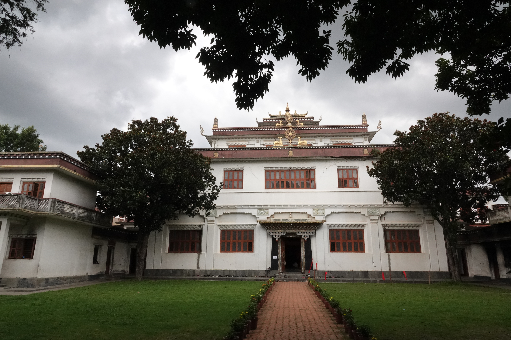
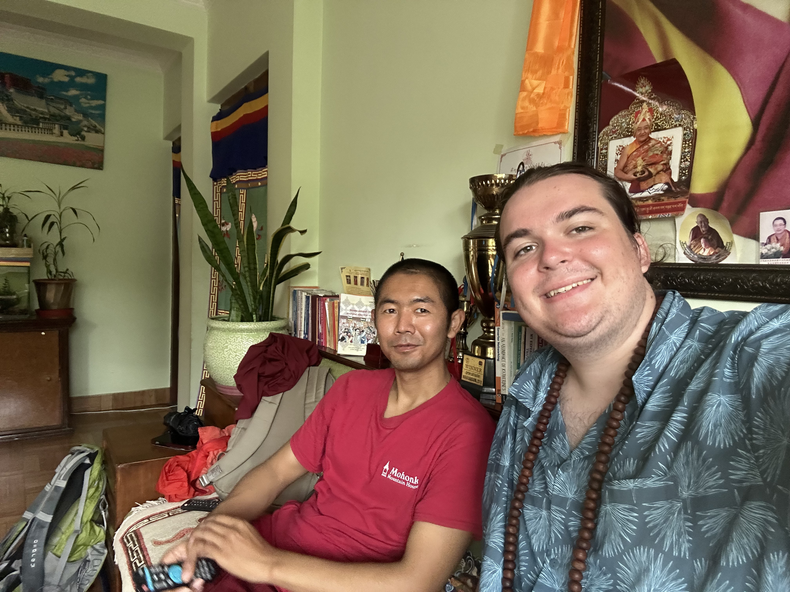

Buddhism
During my sophomore year of college I started getting interested in Buddhist philosophy, and decided I was interested in doing some sort of class or study abroad experience related to that. I ended up finding out about Rangjung Yeshe Institute (RYI), the Kathmandu University Center for Buddhist Studies. RYI offers bachelors, masters, and Phd programs in Buddhist studies, and also hosts a lot of international students at a variety of different programs. RYI is also a major hub for translation and textual studies, and offers classes on Classical Tibetan, Colloquial Tibetan, and Sanskrit. They are also very closely affiliated with Ka Nying Shedrub Ling monastery (KNSL). In fact all in person RYI classes are held at KNSL one floor above one of the monastery's shrine rooms, and many teachers at RYI are monks at KNSL. KNSL is one of the largest monasteries in Kathmandu, and has over seven hundred monks and nuns. The monastery was founded and built by Tulku Urgyen Rinpoche, and is currently led by his son, the revered teacher Chokyi Nyima Rinpoche (a recent article about Buddhism in Nepal described Rinpoche as "Yoda like" which I thought was quite funny). I was fortunate enough to meet him a couple of times during my program at RYI.
I ended up participating in the Buddhist studies summer intensive program, and taking Buddhist Studies I. The class was divided into three parts: meditation, philosophy, and history. The meditation class was taught by a Lopon (senior monk) from KNSL, and consisted of a mixture of guided meditation as well as discussion of some technique and theory, using a short textbook written by another teacher at the monastery. The class focused mostly on Samatha meditation, which means "calm abiding". The practice focuses on calming the mind, as opposed to other more complicated practices called Vipassana. The philosophy portion of the class was taught by another Lopon from KNSL, and focused on the text The Thirty-Seven Practices of a Bodhisattva by Gyalse Tokme, with commentary by Chokyi Drakpa. The text is often one of the first that is taught to new students of Tibetan Buddhism, and breaks down fundamental philosophy into a list of thirty-seven essential practices. Both of these two classes were taught in a traditional Tibetan monastic style format, consisting mostly of lectures in Tibetan translated by our wonderful translator (though many of my teachers did speak enough English that we had many discussions in English as well). The third part of the course was a general overview of Buddhist history and culture taught by a western academic who is currently at RYI. This portion of the class was also wonderful, and talked a little bit about Buddhism all over the world. We started by discussing pre-Buddhist India and the Buddha's life before moving on to the spread of Buddhism to rest of Asia.


Left: Ka Nying Shedrub Ling Monastery. Right: Me and my meditation teacher (and dear friend) Jigme.
I am so glad that I decided to go to Nepal; it was one of the best experiences of my life. I learned so much, experienced so many new things, and met so many great people. I hope that one day I can go back.
Lots of people ask me what draws me to Buddhism, and I never have a very satisfying answer. The truth is that it's a lot of things. The emphasis on impernanence and interdependence has always fascinated me. I have also always loved idea of mindfulness, something that has helped me even before I was ever interested in Buddhism. I also find the classical Indian Buddhist schools of philosophy to be extremely interesting, since they seem to think about the mind and reality in a different way than many European thinkers. If anyone reading this is interested in learning more about Buddhism, I always recommend that people start with The Heart of the Buddha's Teaching by Thich Nhat Hanh.
Statue of Shakyamuni Buddha in Muktinath.